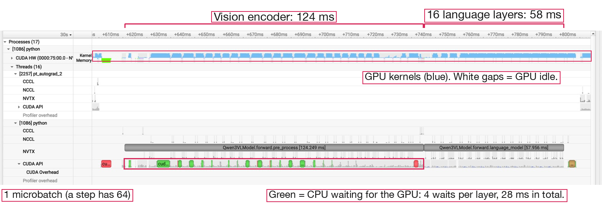
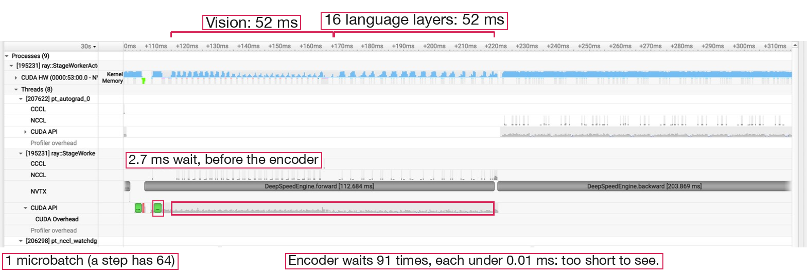
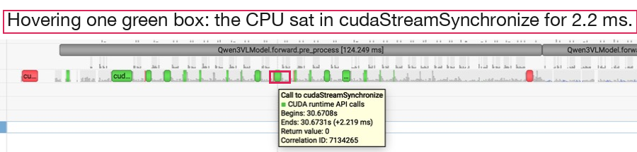
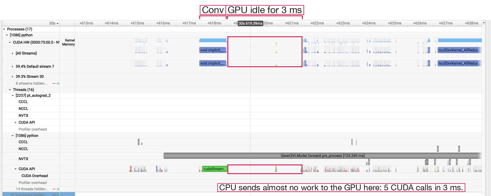
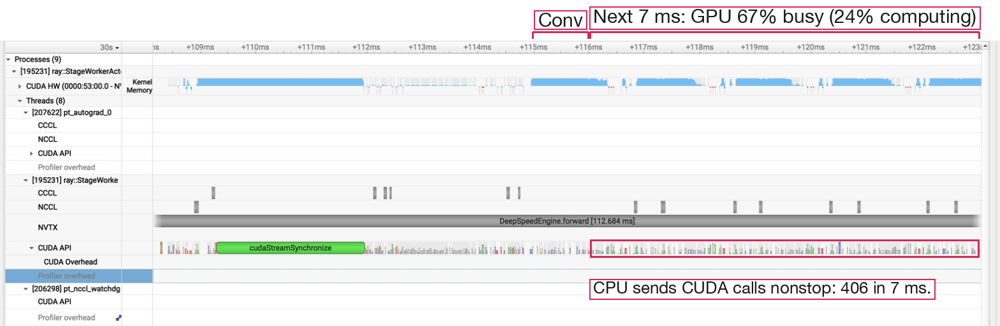
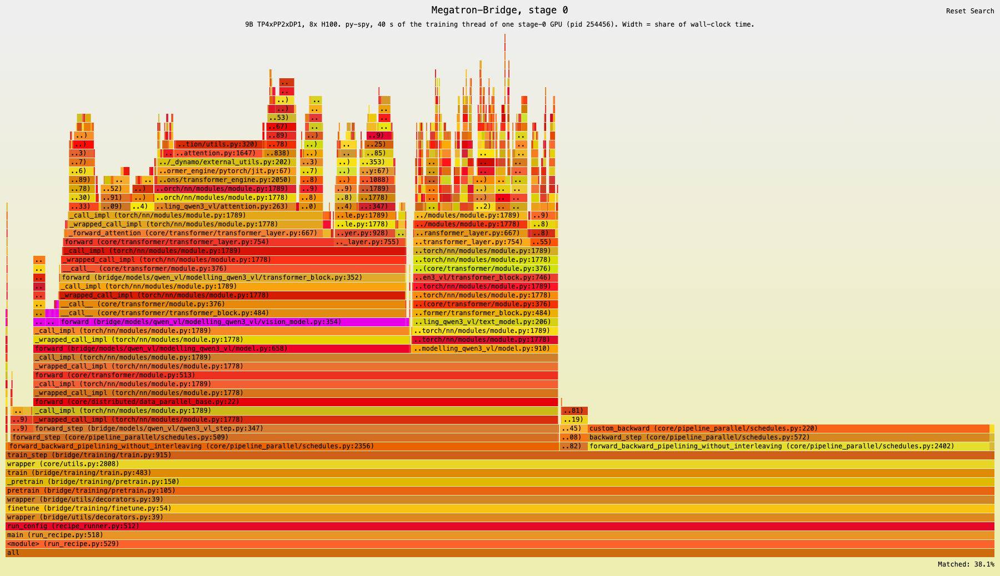
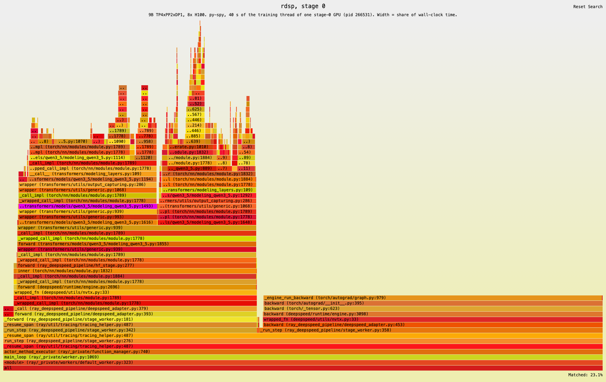
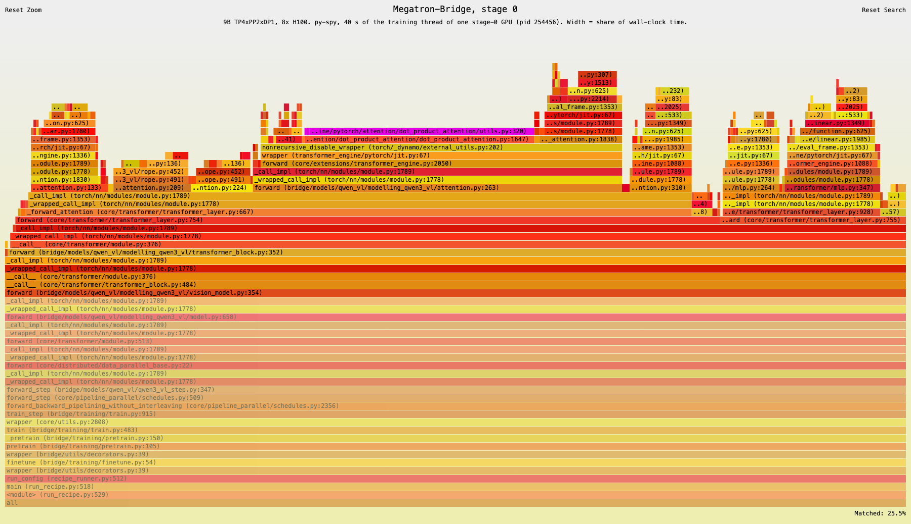
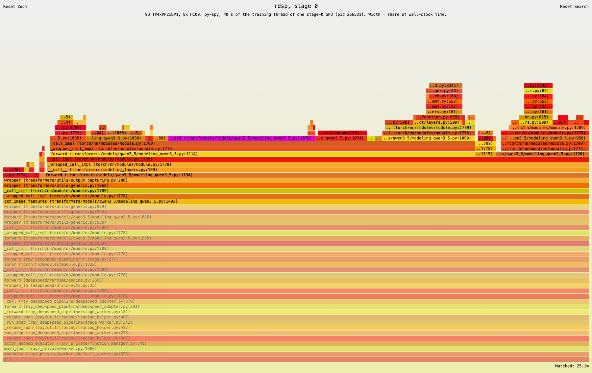

<title>9B Bridge vs rdsp</title>
<link rel="preconnect" href="https://fonts.googleapis.com">
<link rel="preconnect" href="https://fonts.gstatic.com" crossorigin>
<link rel="stylesheet" href="https://fonts.googleapis.com/css2?family=IBM+Plex+Mono:wght@400;600&family=IBM+Plex+Sans+Condensed:wght@600&family=IBM+Plex+Sans:wght@400;600&display=swap">
<style>
/* Layout: one reading column, figures full width of it, evidence in reading order */
:root {
  --bg: #f6f7f8; --surface: #ffffff; --fg: #1d232b; --muted: #5b6672; --line: #d9dee3;
  --bridge: #b5651d; --rdsp: #1f6f8b; --hot: #c9302c;
  --compute: #2b8a6e; --nccl: #7b62b8; --idle: #ffffff;
  --p0: #c9302c; --p1: #3e7fb0; --p2: #d39a2c; --p3: #8a5cc2; --p4: #8c96a1; --p5: #c5ccd3;
  --font-body: "IBM Plex Sans", "Helvetica Neue", Arial, sans-serif;
  --font-head: "IBM Plex Sans Condensed", "Arial Narrow", Arial, sans-serif;
  --font-mono: "IBM Plex Mono", ui-monospace, Menlo, monospace;
}
@media (prefers-color-scheme: dark) { :root:not([data-theme="light"]) {
  --bg: #12161b; --surface: #1a2027; --fg: #e4e8ec; --muted: #9aa5b1; --line: #2c343d;
  --bridge: #e39a55; --rdsp: #5fb3d3; --hot: #ff6b63; --compute: #4cc29d; --nccl: #a58be0; --idle: #1a2027;
  --p0: #ff6b63; --p1: #6aa9dc; --p2: #e8b54d; --p3: #b08ee6; --p4: #7d8894; --p5: #4a535d;
  color-scheme: dark; } }
:root[data-theme="dark"] {
  --bg: #12161b; --surface: #1a2027; --fg: #e4e8ec; --muted: #9aa5b1; --line: #2c343d;
  --bridge: #e39a55; --rdsp: #5fb3d3; --hot: #ff6b63; --compute: #4cc29d; --nccl: #a58be0; --idle: #1a2027;
  --p0: #ff6b63; --p1: #6aa9dc; --p2: #e8b54d; --p3: #b08ee6; --p4: #7d8894; --p5: #4a535d;
  color-scheme: dark; }
body { background: var(--bg); color: var(--fg); font: 16px/1.55 var(--font-body); }
main { max-width: 820px; margin: 0 auto; padding-inline: 20px; padding-block: 28px 64px; display: grid; gap: 28px; }
h1, h2 { font-family: var(--font-head); font-weight: 600; text-wrap: balance; margin: 0; line-height: 1.15; }
h1 { font-size: 2.1rem; } h2 { font-size: 1.45rem; }
p, li { max-width: 68ch; margin: 0; } ul, ol { margin: 0; padding-left: 1.3em; display: grid; gap: 4px; }
section { display: grid; gap: 12px; min-width: 0; }
.eyebrow { font: 600 0.78rem/1 var(--font-mono); letter-spacing: 0.06em; text-transform: uppercase; color: var(--muted); }
.muted { color: var(--muted); }
figure { margin: 0; background: var(--surface); border: 1px solid var(--line); border-radius: 6px; padding: 14px; display: grid; gap: 10px; min-width: 0; }
figure .chart { overflow-x: auto; } figure svg { display: block; width: 100%; min-width: 560px; height: auto; }
figcaption { font-size: 0.92rem; color: var(--muted); max-width: 72ch; }
.tablewrap { overflow-x: auto; }
table { border-collapse: collapse; width: 100%; font-variant-numeric: tabular-nums; }
th, td { text-align: left; padding: 7px 10px; border-bottom: 1px solid var(--line); white-space: nowrap; }
th { font: 600 0.8rem var(--font-mono); text-transform: uppercase; letter-spacing: 0.04em; color: var(--muted); }
td.num, th.num { text-align: right; }
tr.total td { font-weight: 600; border-bottom: none; }
.b { color: var(--bridge); font-weight: 600; } .r { color: var(--rdsp); font-weight: 600; }
.hotword { color: var(--hot); font-weight: 600; }
pre { margin: 0; overflow-x: auto; background: var(--surface); border: 1px solid var(--line); border-radius: 6px; padding: 12px 14px; font: 0.84rem/1.5 var(--font-mono); }
pre .hl { color: var(--hot); font-weight: 600; }
code { font-family: var(--font-mono); font-size: 0.9em; }
.headline { font-size: 1.15rem; }
svg text { fill: var(--fg); font-family: var(--font-body); }
svg .axis { fill: var(--muted); font-size: 12px; font-family: var(--font-mono); }
svg .rowlabel { font-size: 13px; font-weight: 600; }
svg .legend { font-size: 12.5px; }
svg .grid { stroke: var(--line); stroke-width: 1; }
svg .line { fill: none; stroke-width: 2; } svg .line.bridge { stroke: var(--bridge); } svg .line.rdsp { stroke: var(--rdsp); }
svg .median { stroke-width: 1; stroke-dasharray: 4 4; } svg .median.bridge { stroke: var(--bridge); } svg .median.rdsp { stroke: var(--rdsp); }
svg .label { font-size: 13px; font-weight: 600; } svg .label.bridge { fill: var(--bridge); } svg .label.rdsp { fill: var(--rdsp); }
svg .p0 { fill: var(--p0); } svg .p1 { fill: var(--p1); } svg .p2 { fill: var(--p2); } svg .p3 { fill: var(--p3); } svg .p4 { fill: var(--p4); } svg .p5 { fill: var(--p5); }
svg .inbar { fill: #fff; font-size: 12px; font-weight: 600; font-family: var(--font-mono); }
.shot { display: block; border: 1px solid var(--line); border-radius: 4px; overflow: hidden; }
.shot img { display: block; width: 100%; height: auto; }
.nums { display: flex; flex-wrap: wrap; gap: 12px 32px; }
.nums div { display: grid; gap: 2px; }
.big { font: 600 2rem/1 var(--font-head); font-variant-numeric: tabular-nums; }
ol.answer { gap: 10px; } ol.answer li { padding-left: 4px; }
h3 { font-family: var(--font-head); font-weight: 600; font-size: 1.15rem; margin: 8px 0 0; }
@media (max-width: 480px) { h1 { font-size: 1.7rem; } }
</style>
<main>
<header style="display:grid;gap:14px">
  <p class="muted"><a href="https://claude.ai/artifact/DwiJpTgif8NV8Y756vQupZ">← Back to the summary of all runs</a></p>
  <p class="eyebrow">Qwen3.5-9B · TP4 × PP2 × DP1 · 8× H100 · 2026-10-11</p>
  <h1>Why rdsp is faster than Megatron-Bridge on 9B</h1>
  <div class="nums">
    <div><span class="big r">14.63 s</span><span class="muted">rdsp, per step</span></div>
    <div><span class="big b">18.24 s</span><span class="muted">Megatron-Bridge, per step</span></div>
    <div><span class="big">3.6 s</span><span class="muted">rdsp is faster (20%)</span></div>
  </div>
  <p class="muted">Same model, data, batch, layer split and loss on both. Both pad every row to 2,048 tokens.</p>
</header>

<section id="answer">
  <h2>The answer</h2>
  <ol class="answer">
    <li><b>The gap is in one place: the vision encoder.</b> On stage 0 it takes 6.8 s per step on Bridge and 3.2 s on rdsp: 106 ms vs 50 ms for each of the 64 microbatches.</li>
    <li><b>Bridge's vision encoder makes the CPU wait for the GPU 4 times per layer.</b> A wait empties the GPU's queue of work. rdsp's encoder also waits, but in the Nsight trace its waits are near zero.</li>
    <li><b>Bridge's vision code also spends about twice the CPU time per layer.</b> The CPU then cannot refill the GPU fast enough, so the GPU sits idle.</li>
  </ol>
</section>

<section id="nsight">
  <p class="eyebrow">Evidence 1 · Nsight Systems</p>
  <h2>One microbatch on each system</h2>
  <p>These pictures show <b>one microbatch</b>. A training step has 64. They come from the traced run, which is slower: Bridge's vision encoder takes 124 ms here vs 106 ms per microbatch in the normal run, rdsp's 52 ms vs 50 ms.</p>
  <p>Time runs left to right. Three rows matter:</p>
  <div class="tablewrap"><table>
    <tr><th>Row</th><th>What it shows</th><th>Look for</th></tr>
    <tr><td><code>CUDA HW</code></td><td>The GPU</td><td>Blue = running. White = idle.</td></tr>
    <tr><td><code>NVTX</code></td><td>Which part of the model is running</td><td>Gray bars with names</td></tr>
    <tr><td><code>CUDA API</code></td><td>The CPU sending work to the GPU</td><td>Green = CPU waiting for the GPU</td></tr>
  </table></div>
  <figure><a class="shot" href="screens/n1_bridge_one_microbatch.png"></a><figcaption><span class="b">Bridge</span>, stage 0, 205 ms shown. The vision encoder takes 124 ms. In it the CPU waits for the GPU 141 times (4 per layer), 28 ms in total. Only the longer waits are wide enough to see.</figcaption></figure>
  <figure><a class="shot" href="screens/n2_rdsp_one_microbatch.png"></a><figcaption><span class="r">rdsp</span>, stage 0, the same 205 ms width. Vision encoder 52 ms, language layers 52 ms. rdsp's encoder waits 91 times, but each wait is under 0.01 ms (0.4 ms in total), so none show.</figcaption></figure>
  <figure><a class="shot" href="screens/n3_bridge_one_wait.png"></a><figcaption>One of Bridge's green boxes, hovered. The CPU waited 2.2 ms.</figcaption></figure>
  <h3>Zoom in: what one wait costs</h3>
  <figure><a class="shot" href="screens/n4_bridge_15ms.png"></a><figcaption><span class="b">Bridge</span>, 15 ms shown, at the start of the vision encoder. After the first kernel (the conv) the GPU does nothing for 3 ms. In the 7 ms after the conv, the GPU is busy 4% of the time.</figcaption></figure>
  <figure><a class="shot" href="screens/n5_rdsp_15ms.png"></a><figcaption><span class="r">rdsp</span>, 15 ms shown, the same point in the model. In the 7 ms after the conv, the GPU is busy 67% of the time: 24% computing, the rest in NCCL all-reduces (the encoder is split over 4 GPUs).</figcaption></figure>
  <p class="muted">Nsight slows the CPU, rdsp more than Bridge (Bridge 18.2 to 22.6 s per step, rdsp 14.6 to 24.6 s). Use these pictures for the pattern, not for exact times.</p>
</section>

<section id="split">
  <p class="eyebrow">Evidence 2 · py-spy</p>
  <h2>Where stage 0's time goes</h2>
  <p>py-spy reads the Python stack 25 times a second and does not slow the run. Stage 0 sets the step time on both systems; stage 1 spends about half of each step waiting for it.</p>
  <figure><div class="chart"><svg viewBox="0 0 760 220" role="img" aria-label="Stage 0 time per step by part"><line class="grid" x1="128.0" x2="128.0" y1="14" y2="112"/><text class="axis" x="128.0" y="118" text-anchor="middle">0 s</text><line class="grid" x1="187.9" x2="187.9" y1="14" y2="112"/><text class="axis" x="187.9" y="118" text-anchor="middle">2 s</text><line class="grid" x1="247.7" x2="247.7" y1="14" y2="112"/><text class="axis" x="247.7" y="118" text-anchor="middle">4 s</text><line class="grid" x1="307.6" x2="307.6" y1="14" y2="112"/><text class="axis" x="307.6" y="118" text-anchor="middle">6 s</text><line class="grid" x1="367.5" x2="367.5" y1="14" y2="112"/><text class="axis" x="367.5" y="118" text-anchor="middle">8 s</text><line class="grid" x1="427.3" x2="427.3" y1="14" y2="112"/><text class="axis" x="427.3" y="118" text-anchor="middle">10 s</text><line class="grid" x1="487.2" x2="487.2" y1="14" y2="112"/><text class="axis" x="487.2" y="118" text-anchor="middle">12 s</text><line class="grid" x1="547.1" x2="547.1" y1="14" y2="112"/><text class="axis" x="547.1" y="118" text-anchor="middle">14 s</text><line class="grid" x1="606.9" x2="606.9" y1="14" y2="112"/><text class="axis" x="606.9" y="118" text-anchor="middle">16 s</text><line class="grid" x1="666.8" x2="666.8" y1="14" y2="112"/><text class="axis" x="666.8" y="118" text-anchor="middle">18 s</text><text class="rowlabel" x="118" y="36.0" text-anchor="end">Megatron-Bridge</text><rect class="part p0" x="128.0" y="14" width="203.1" height="34"><title>Vision encoder, forward: 6.79 s</title></rect><text class="inbar" x="229.6" y="36.0" text-anchor="middle">6.8</text><rect class="part p1" x="331.1" y="14" width="81.1" height="34"><title>Language layers, forward: 2.71 s</title></rect><text class="inbar" x="371.7" y="36.0" text-anchor="middle">2.7</text><rect class="part p2" x="412.2" y="14" width="17.8" height="34"><title>Loading the batch: 0.60 s</title></rect><rect class="part p3" x="430.1" y="14" width="12.6" height="34"><title>Waiting after send/receive: 0.42 s</title></rect><rect class="part p4" x="442.7" y="14" width="224.2" height="34"><title>Backward pass: 7.49 s</title></rect><text class="inbar" x="554.8" y="36.0" text-anchor="middle">7.5</text><rect class="part p5" x="666.9" y="14" width="7.1" height="34"><title>Other: 0.24 s</title></rect><text class="axis" x="680.0" y="36.0">= 18.24 s</text><text class="rowlabel" x="118" y="100.0" text-anchor="end">rdsp</text><rect class="part p0" x="128.0" y="78" width="95.2" height="34"><title>Vision encoder, forward: 3.18 s</title></rect><text class="inbar" x="175.6" y="100.0" text-anchor="middle">3.2</text><rect class="part p1" x="223.2" y="78" width="73.3" height="34"><title>Language layers, forward: 2.45 s</title></rect><text class="inbar" x="259.8" y="100.0" text-anchor="middle">2.4</text><rect class="part p2" x="296.5" y="78" width="6.8" height="34"><title>Loading the batch: 0.23 s</title></rect><rect class="part p3" x="303.3" y="78" width="1.6" height="34"><title>Waiting after send/receive: 0.05 s</title></rect><rect class="part p4" x="304.8" y="78" width="250.5" height="34"><title>Backward pass: 8.37 s</title></rect><text class="inbar" x="430.1" y="100.0" text-anchor="middle">8.4</text><rect class="part p5" x="555.3" y="78" width="10.6" height="34"><title>Other: 0.35 s</title></rect><text class="axis" x="571.9" y="100.0">= 14.63 s</text><rect class="part p0" x="128" y="131" width="14" height="14"/><text class="legend" x="148" y="142">Vision encoder, forward</text><rect class="part p1" x="338" y="131" width="14" height="14"/><text class="legend" x="358" y="142">Language layers, forward</text><rect class="part p2" x="548" y="131" width="14" height="14"/><text class="legend" x="568" y="142">Loading the batch</text><rect class="part p3" x="128" y="157" width="14" height="14"/><text class="legend" x="148" y="168">Waiting after send/receive</text><rect class="part p4" x="338" y="157" width="14" height="14"/><text class="legend" x="358" y="168">Backward pass</text><rect class="part p5" x="548" y="157" width="14" height="14"/><text class="legend" x="568" y="168">Other</text></svg></div>
  <figcaption>Seconds per step on stage 0. Bridge: 2 of its 4 stage-0 GPUs sampled. rdsp: all 4.</figcaption></figure>
  <div class="tablewrap"><table>
    <tr><th>Stage 0, seconds per step</th><th class="num">Bridge</th><th class="num">rdsp</th><th class="num">Bridge − rdsp</th></tr>
    <tr><td>Vision encoder, forward</td><td class="num">6.79</td><td class="num">3.18</td><td class="num">+3.60</td></tr><tr><td>Language layers, forward</td><td class="num">2.71</td><td class="num">2.45</td><td class="num">+0.26</td></tr><tr><td>Loading the batch</td><td class="num">0.60</td><td class="num">0.23</td><td class="num">+0.37</td></tr><tr><td>Waiting after send/receive</td><td class="num">0.42</td><td class="num">0.05</td><td class="num">+0.37</td></tr><tr><td>Backward pass</td><td class="num">7.49</td><td class="num">8.37</td><td class="num">-0.88</td></tr><tr><td>Other</td><td class="num">0.24</td><td class="num">0.35</td><td class="num">-0.12</td></tr><tr class="total"><td>Step</td><td class="num">18.24</td><td class="num">14.63</td><td class="num">+3.61</td></tr>
  </table></div>
  <ul>
    <li>Vision encoder: Bridge is 3.6 s slower. That is the whole gap.</li>
    <li>Backward pass: rdsp is 0.9 s slower. rdsp launches 1.6× more GPU kernels per step (Nsight).</li>
  </ul>
  <h3>Inside the vision encoder</h3>
  <div class="tablewrap"><table>
    <tr><th>Vision encoder, seconds per step</th><th class="num">Bridge</th><th class="num">rdsp</th><th class="num">Bridge − rdsp</th></tr>
    <tr><td>Line that reads a GPU value (Bridge: TE check; rdsp: lengths.tolist())</td><td class="num">1.43</td><td class="num">0.79</td><td class="num">+0.64</td></tr><tr><td>Rotary position embedding</td><td class="num">1.01</td><td class="num">0.41</td><td class="num">+0.60</td></tr><tr><td>Rest of attention</td><td class="num">2.44</td><td class="num">1.10</td><td class="num">+1.34</td></tr><tr><td>MLP</td><td class="num">1.28</td><td class="num">0.54</td><td class="num">+0.74</td></tr><tr><td>Outside the layers (patch embedding, merger)</td><td class="num">0.62</td><td class="num">0.34</td><td class="num">+0.28</td></tr><tr class="total"><td>Total</td><td class="num">6.78</td><td class="num">3.18</td><td class="num">+3.60</td></tr>
  </table></div>
  <p>The first row is the line in each encoder that reads a value back from the GPU. Its time includes the Python work on that line. It explains 0.6 s of the 3.6 s. The rest is Bridge taking about twice as long in every part.</p>
</section>

<section id="flame">
  <p class="eyebrow">Evidence 3 · py-spy flame graphs</p>
  <h2>The same thing as flame graphs</h2>
  <p>Each box is a function. Wider = more time. The bottom row is the training step; each row up is one call deeper. Purple = the search match. Click a picture for full size.</p>
  <figure><a class="shot" href="screens/1_bridge_vision.png"></a><figcaption><span class="b">Bridge</span>: the vision encoder (purple) is 38% of this GPU's time.</figcaption></figure>
  <figure><a class="shot" href="screens/2_rdsp_vision.png"></a><figcaption><span class="r">rdsp</span>: the vision encoder (purple) is 23%.</figcaption></figure>
  <figure><a class="shot" href="screens/3_bridge_vision_sync.png"></a><figcaption><span class="b">Bridge</span>, zoomed into the vision encoder. Purple = the line that waits for the GPU (Transformer Engine, <code>utils.py:320</code>).</figcaption></figure>
  <figure><a class="shot" href="screens/4_rdsp_vision_sync.png"></a><figcaption><span class="r">rdsp</span>, zoomed into the vision encoder. Purple = its wait line (Hugging Face, <code>modeling_qwen3_5.py:1070</code>).</figcaption></figure>
  <p class="muted">Interactive versions (search, click to zoom): <a href="flame_bridge.svg">Bridge</a>, <a href="flame_rdsp.svg">rdsp</a>.</p>
</section>

<section id="code">
  <p class="eyebrow">The code</p>
  <h2>Why Bridge's encoder waits</h2>
  <ol>
    <li>Bridge keeps the longest image length on the GPU:
  <pre>megatron/bridge/models/qwen_vl/modelling_qwen3_vl/vision_model.py
386  <span class="hl">max_seqlen_q = seqlens.max()</span>          # stays on the GPU</pre></li>
    <li>Before every attention call, Transformer Engine compares it in an <code>if</code>. Reading a GPU value in Python makes the CPU wait for the GPU:
  <pre>transformer_engine/pytorch/attention/dot_product_attention/utils.py
320  <span class="hl">if sf != of:</span>                         # GPU value to Python bool: CPU waits</pre></li>
    <li>The check runs once per vision layer: 27 × 64 = 1,728 times per step.</li>
  </ol>
  <p>py-spy (untraced run) finds Bridge's thread on this line for 1.4 s per step. Nsight (traced run) counts 4 waits per vision layer in Bridge. It does not record which line each wait comes from.</p>
  <p>rdsp's encoder (Hugging Face) also reads a GPU value once per layer, at <code>lengths.tolist()</code> (<code>modeling_qwen3_5.py:1070</code>). In Nsight each of those waits is under 0.01 ms.</p>
</section>

<section id="checks">
  <p class="eyebrow">How sure are we</p>
  <h2>Checks and limits</h2>
  <figure><div class="chart"><svg viewBox="0 0 760 300" role="img" aria-label="Step time for steps 6 to 50"><line class="grid" x1="52" x2="584" y1="260.0" y2="260.0"/><text class="axis" x="44" y="264.0" text-anchor="end">12 s</text><line class="grid" x1="52" x2="584" y1="206.2" y2="206.2"/><text class="axis" x="44" y="210.2" text-anchor="end">14 s</text><line class="grid" x1="52" x2="584" y1="152.4" y2="152.4"/><text class="axis" x="44" y="156.4" text-anchor="end">16 s</text><line class="grid" x1="52" x2="584" y1="98.7" y2="98.7"/><text class="axis" x="44" y="102.7" text-anchor="end">18 s</text><line class="grid" x1="52" x2="584" y1="44.9" y2="44.9"/><text class="axis" x="44" y="48.9" text-anchor="end">20 s</text><text class="axis" x="52.0" y="284" text-anchor="middle">6</text><text class="axis" x="100.4" y="284" text-anchor="middle">10</text><text class="axis" x="221.3" y="284" text-anchor="middle">20</text><text class="axis" x="342.2" y="284" text-anchor="middle">30</text><text class="axis" x="463.1" y="284" text-anchor="middle">40</text><text class="axis" x="584.0" y="284" text-anchor="middle">50</text><text class="axis" x="318" y="298" text-anchor="middle">step</text><polyline class="line bridge" points="52.0,84.0 64.1,93.4 76.2,90.4 88.3,81.8 100.4,83.6 112.5,86.6 124.5,86.1 136.6,56.7 148.7,90.9 160.8,57.8 172.9,84.3 185.0,71.1 197.1,52.1 209.2,98.5 221.3,81.8 233.4,89.6 245.5,95.9 257.5,85.1 269.6,102.9 281.7,100.6 293.8,99.1 305.9,101.3 318.0,91.1 330.1,74.9 342.2,75.4 354.3,61.9 366.4,109.6 378.5,101.3 390.5,74.8 402.6,92.2 414.7,102.3 426.8,109.4 438.9,94.6 451.0,112.2 463.1,97.9 475.2,77.3 487.3,89.3 499.4,102.8 511.5,109.0 523.5,98.6 535.6,109.7 547.7,103.6 559.8,105.0 571.9,105.7 584.0,109.2"/><line class="median bridge" x1="52" x2="584" y1="92.2" y2="92.2"/><text class="label bridge" x="592" y="96.2">Megatron-Bridge 18.24 s</text><polyline class="line rdsp" points="52.0,178.4 64.1,180.4 76.2,174.4 88.3,181.1 100.4,188.2 112.5,189.1 124.5,192.9 136.6,184.8 148.7,201.4 160.8,191.4 172.9,194.3 185.0,182.0 197.1,187.4 209.2,196.6 221.3,191.1 233.4,182.4 245.5,188.8 257.5,194.3 269.6,194.1 281.7,187.9 293.8,188.6 305.9,193.7 318.0,195.0 330.1,180.7 342.2,183.0 354.3,191.4 366.4,194.7 378.5,184.3 390.5,195.5 402.6,190.4 414.7,179.4 426.8,190.9 438.9,189.1 451.0,191.1 463.1,179.8 475.2,192.1 487.3,189.1 499.4,189.3 511.5,183.0 523.5,193.0 535.6,191.9 547.7,194.4 559.8,179.9 571.9,192.8 584.0,195.5"/><line class="median rdsp" x1="52" x2="584" y1="189.3" y2="189.3"/><text class="label rdsp" x="592" y="193.3">rdsp 14.63 s</text></svg></div>
  <figcaption>Every step from 6 to 50. Bridge 17.50 to 19.73 s, rdsp 14.18 to 15.18 s. The two never overlap.</figcaption></figure>
  <ul>
    <li>One run per system. No repeats.</li>
    <li>py-spy read 2 of Bridge's 4 stage-0 GPUs (it failed on the other 2).</li>
    <li>py-spy sees Python only. It cannot split Python work from time stuck inside a C call.</li>
    <li>The 16 | 16 layer split is not balanced for either system. Not tested.</li>
    <li>Fixed on 2026-10-11: the first version counted forward code that runs through <code>torch.autograd.Function</code> as backward. That shrank the vision gap to 2.2 s and made up a 1.2 s backward gap. The numbers here are corrected.</li>
  </ul>
  <p class="muted">Files: <code>rdsp/bench_oct10/bridge_vs_rdsp/9b_tp4pp2dp1/</code>. Logs in <code>logs/</code>, raw profiles in <code>profiles/</code>, tables and screenshots in <code>results/</code>, scripts in <code>scripts/</code> (this page: <code>make_report.py</code>).</p>
</section>
</main>